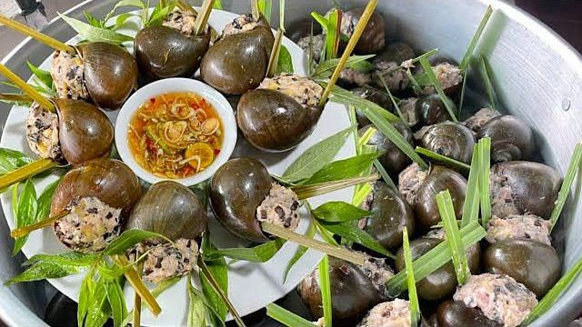

Nguyên liệu & món
Ốc bươu nhồi thịt: vì sao phải băm, phải có giò sống và phải hấp thật chín

Các bác ơi, ốc ngày xưa là món của nhà nghèo đồng chiêm: cua, cáy, tép, ốc mò ngoài ruộng về là có bữa. Đến lúc ai đó nghĩ ra cho thêm thịt, nấm hương, băm băm nhồi nhồi vào vỏ thì con ốc mới được “lên đời” thành món đãi khách. Mà công thì thôi rồi, ngồi khêu ốc với băm nhân cũng đủ mỏi lưng như em bóc chục cân hành 😂
Nhưng mỗi bước trong món này đều có lý do cả đấy ạ, em kể chị em nghe.
Vì sao phải băm, không để nguyên con?
Phần thịt ốc mình ăn là cái chân, toàn cơ là cơ, lại nhiều chất keo. Luộc nguyên con thì nhai như nhai dây chun. Băm nhỏ là mình cắt ngắn mấy sợi cơ ấy ra, ăn vẫn sần sật mà không còn dai nhách.
Giò sống là “keo dán” của nhân
Thịt xay có muối thì đạm trong thịt tan ra thành một lớp dính dính. Gặp nóng, lớp ấy đông lại thành mạng lưới ôm lấy hạt ốc, hạt nấm. Thiếu giò sống, kéo cọng sả ra là nhân rơi tuột ra theo, mất cả đẹp.
Nấm hương, mộc nhĩ: mỗi đứa một việc
- Nấm hương khô cộng với thịt và nước mắm thì vị ngọt đậm lên hẳn, ngọt hơn cộng hai thứ lại nhiều. Đây là kiểu “một cộng một lớn hơn hai” mà các cụ nấu ăn biết từ lâu, giờ khoa học mới gọi tên là vị umami cộng hưởng.
- Mộc nhĩ thì gần như chẳng có vị gì, nó ở đấy để giòn. Hấp bao lâu nó vẫn sần sật.
Làm sạch nhớt và mùi bùn
- Ngâm ốc nước vo gạo với vài lát ớt vài tiếng cho ốc nhả bùn.
- Nhớt ốc gặp muối, giấm hoặc chanh là vón lại, bóp rửa là trôi.
- Mùi bùn tanh tanh của đồ nước ngọt thì sả với gừng át được. Lúc hấp, hơi nước mang luôn mùi thơm của sả gừng thấm vào nhân.
Hấp bao lâu là vừa?
Ốc cỡ vừa hấp khoảng 10–15 phút kể từ lúc nước sôi mạnh, tùy nồi tùy bếp. Hấp quá tay thì nhân co lại, ép hết nước ra, ăn bở và nhạt. Thiếu tay thì nguy hiểm, đọc tiếp đoạn dưới nhé.
Đoạn quan trọng nhất: ốc nước ngọt phải chín kỹ
Ốc bươu, ốc nhồi có thể mang ấu trùng giun phổi chuột (tên khoa học Angiostrongylus cantonensis) – thủ phạm gây viêm màng não, cùng vài loại sán khác. Ốc tái, gỏi ốc sống là đánh cược với sức khỏe các bác ạ. Nhà em chốt: ốc phải hấp chín kỹ, chỉ lấy phần thịt chân, bỏ ruột. Rửa sạch dao thớt sau khi sơ chế ốc sống.
Ông bà mình nói “ốc tính hàn”
Thế nên món ốc nào cũng đi cùng gừng, sả, tiêu, ớt cho “ấm”. Ông bà lý giải theo âm dương, còn nhìn bằng mắt nấu ăn thì mấy thứ này đúng là khử mùi tanh tốt nhất. Hai cách giải thích gặp nhau ở cùng một đĩa ốc, hay thế chứ lị.
Ăn có bổ không?
Thịt ốc bươu khoảng 11–12 g đạm trong 100 g, rất ít mỡ, lại nhiều canxi hơn thịt lợn thịt bò. Ăn vừa phải thì là món ngon lành mạnh.
Tối nay nhà ai làm ốc nhồi thì nhớ phần em một con nhé 😜 Thiếu sả tươi thì chị em tham khảo ở dưới ạ.
Em tham khảo: Ý tưởng từ bài chia sẻ của anh Dinh Phong Nguyen (facebook.com/aaron.amrak); CDC (Mỹ) về giun phổi chuột Angiostrongylus cantonensis; Bảng thành phần thực phẩm Việt Nam.
Kinh nghiệm và kiến thức bếp nhà, em viết lại theo cách hiểu của em – không thay lời khuyên của bác sĩ, chuyên gia dinh dưỡng. Thấy chỗ nào chưa đúng, các bác nhắn em sửa nhé.